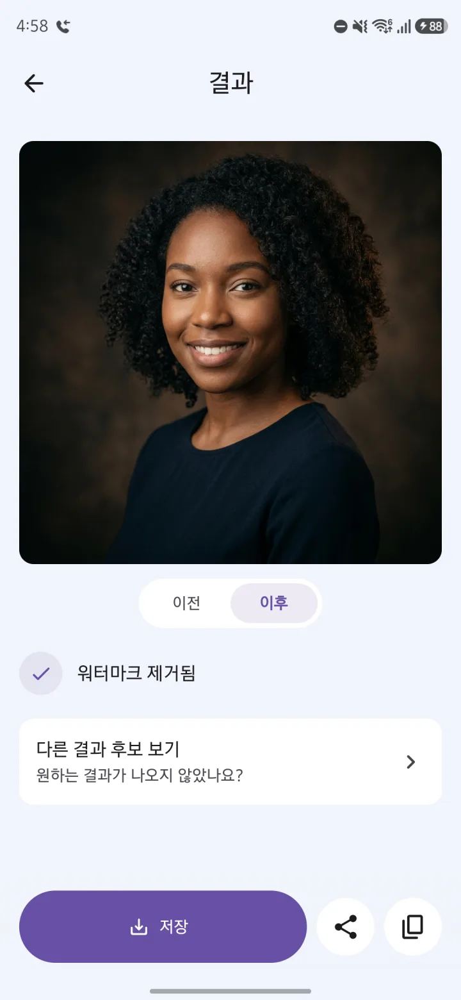
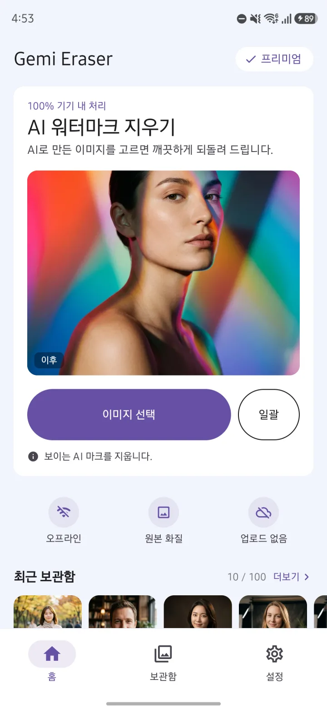
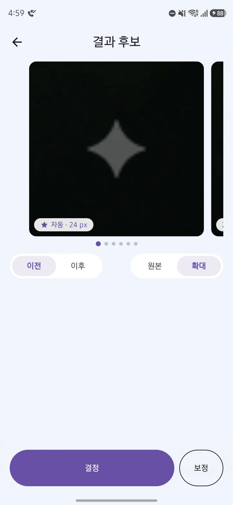
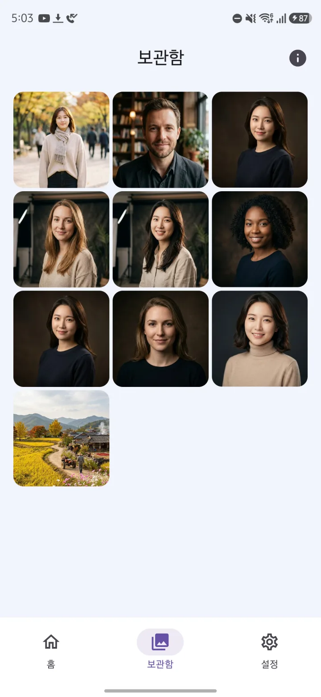

고르면 끝
이미지를 고르면 워터마크를 자동으로 찾아 지워요. 따로 맞출 설정이 없어요. 결과는 원본과 나란히 놓고 비교할 수 있어요.

Gemi Eraser는 Gemini로 만든 이미지 오른쪽 아래의 반투명 별 모양 로고(보이는 워터마크)를, 이미지를 업로드하지 않고 폰 안에서 계산해 지우는 안드로이드 앱이에요. 무료(광고 포함)로 하루 처리 횟수 제한 없이 쓰고, 광고 제거와 여러 장 일괄 처리는 한 번 결제하는 평생 이용권으로 열려요.
Google Play에서 받기
이미지를 고르면 오른쪽 아래 로고를 찾아 지워요. 처리는 폰 안에서 끝나고, 이미지는 어디에도 올라가지 않아요.
감지부터 제거까지 폰 안에서 처리하고, 이미지는 업로드하지 않아요. 그래서 인터넷이 없어도 처리돼요.
다른 앱에서 이미지를 Gemi Eraser로 공유하면 바로 처리돼요. 여러 장을 골라 차례로 처리하는 일괄 처리는 프리미엄 기능이에요.
이미지를 고르면 워터마크를 자동으로 찾아 지워요. 따로 맞출 설정이 없어요. 결과는 원본과 나란히 놓고 비교할 수 있어요.

Gemini 로고의 모양과 투명도를 알고 있어서, 로고가 얹힌 과정을 거꾸로 계산해 그 아래 원래 픽셀을 살려 내요. 바뀌는 건 워터마크 자리뿐이고, 결과는 무손실 PNG로 저장되며 원본 파일은 그대로 남아요.
'다른 결과 후보 보기'에서 여러 결과를 확대해 견줘 보고, '보정'에서 위치·크기·강도를 손으로 맞춰요.

지운 이미지는 앱 안 보관함에 모여서, 나중에 다시 저장·공유하거나 이미지로 복사할 수 있어요. 기본 100개까지 보관하고(무제한도 고를 수 있어요), 남기고 싶지 않으면 보관함 저장을 꺼 두면 돼요.

| 무료 | 프리미엄 | |
|---|---|---|
| 가격 | 무료 | 광고 제거 평생 이용권 ₩2,900 · 한 번 결제, 구독 아님 |
| 하루 처리 횟수 | 제한 없음 | 제한 없음 |
| 처리 방식 | 한 장씩 | 한 장씩 + 여러 장 일괄 처리 |
| 결과 전 광고 | 워터마크가 감지되면 결과 전에 광고 한 편 — 하루 첫 1회, 끝까지 보면 그날은 더 안 나와요 | 없어요 |
| 앱 안 광고 | 배너·네이티브 광고, 앱을 열 때 뜨는 광고 | 없어요 |
| 후보 비교·보정·보관함·공유로 받기 | ✓ | ✓ |
가격은 한국 기준이며 지역마다 다를 수 있어요(미국 US$1.99).
| Gemi Eraser | 사진 편집 앱의 지우개 기능 | 웹 워터마크 제거 도구 | |
|---|---|---|---|
| 지우는 대상 | Gemini 이미지 오른쪽 아래 별 모양 로고만 | 칠한 곳은 무엇이든 | 도구마다 달라요 |
| 지우는 방식 | 로고 모양·투명도로 거꾸로 계산해 원래 픽셀을 되살려요 | 대개 주변을 보고 그 자리를 새로 채워요 | 도구마다 달라요 |
| 이미 로고가 찍힌 이미지 | ✓ Gemini 원본 파일이면 | ✓ | 도구마다 달라요 |
| 스크린샷·자른 사본 | 감지되지 않거나 일부 남을 수 있어요 | ✓ 칠하면 지워져요 | 도구마다 달라요 |
| 이미지 업로드 | 안 해요, 폰 안에서 처리 | 앱마다 달라요 | 도구마다 달라요 |
| 쓰려면 | 안드로이드 10 이상. 무료(광고) 또는 평생 이용권 | 편집 앱 | 브라우저 |
범주 칸은 일반적인 특징이고 앱과 도구마다 다를 수 있어요.
Gemi Eraser가 그 앱이에요. Gemini로 만든 이미지 오른쪽 아래의 반투명 별 모양 로고를 폰 안에서 계산해 지워요. 이미지를 고르면 워터마크를 자동으로 찾아 지우니 따로 설정할 건 없어요. 안드로이드 10 이상에서 쓸 수 있어요.
네, 무료로 쓸 수 있고 하루 처리 횟수 제한도 없어요. 대신 워터마크가 감지되면 결과를 보여 주기 전에 광고가 한 편 나오고, 앱 안에도 광고가 있어요. 결과 전 광고는 하루 첫 1회만이에요. 끝까지 보면 그날 남은 처리는 광고 없이 바로 결과가 나오고, 중간에 닫으면 그 결과는 취소돼요. 여러 장을 한 번에 처리하는 건 프리미엄이에요.
구독이 아니라 한 번 결제하는 '광고 제거 평생 이용권'이에요. 한국에서는 ₩2,900이고, 가격은 지역마다 다를 수 있어요. 사면 모든 광고가 사라지고 여러 장 일괄 처리가 열려요.
대부분 Gemini 원본 파일이 아닐 때 그래요. Gemi Eraser는 Gemini가 이미지에 넣는 별 모양 로고만 지워서, 다른 서비스의 로고나 워터마크가 없는 일반 사진에서는 찾을 게 없어요. Gemini 이미지라도 스크린샷이나 자르고 크기를 바꾼 사본, 다른 앱에서 다시 저장한 이미지는 감지되지 않을 수 있어요. Gemini에서 내려받은 그대로의 원본으로 해 보세요.
결과 화면의 '다른 결과 후보 보기'에서 다른 후보를 확대해 비교해 보세요. 그래도 남으면 그 화면의 '보정'에서 위치·크기·강도를 직접 맞추면 돼요. 흔적이 남는 건 대부분 원본 파일이 아닐 때예요.
아니요, 이미지는 폰 안에서 처리되고 업로드되지 않아요. 그래서 이미지 처리는 인터넷 없이도 돼요. 앱이 인터넷을 쓰는 곳은 광고, 익명 사용 통계와 오류 보고, 앱 업데이트 확인, Google Play 구매 확인이에요.
아니요, 사진·저장소 읽기 권한은 요청하지 않아요. 이미지는 안드로이드 사진 선택기로 고르거나 다른 앱에서 공유한 것만 받아요. 접근성 권한도 쓰지 않아요.
워터마크 자리의 픽셀만 바뀌고 나머지는 그대로예요. 저장하거나 공유하면 무손실 PNG로 기기의 Pictures/GeminiEraser 폴더에 저장되고, 원본 파일은 바뀌지 않아요. 다만 약 1,890만 화소를 넘는 아주 큰 이미지는 처리 전에 축소돼요.
아니요, SynthID는 그대로 남아요. Gemini 이미지에는 보이는 로고와 함께 보이지 않는 워터마크인 SynthID도 들어 있는데, Gemi Eraser는 보이는 로고만 지워요.
프리미엄에서 돼요. 무료는 한 장씩이에요. 여러 장을 고르면 차례로 처리되고, 한 번에 고를 수 있는 장수는 안드로이드 사진 선택기가 정해요. 갤러리 같은 다른 앱에서 여러 장을 공유해 보내도 일괄 처리로 이어져요.
아니요, Gemi Eraser는 안드로이드 10 이상용 앱이고 iPhone 버전은 없어요. 지울 수 있는 것도 이미지뿐이라, Flow 같은 도구로 만든 동영상의 워터마크는 지우지 못해요.
보관함 이미지는 앱 안에만 저장되고, 앱을 지우면 함께 지워져요. 남겨 둘 이미지는 미리 저장해 두세요. 저장한 이미지는 기기의 Pictures/GeminiEraser 폴더에 있어요. 계정이나 로그인은 따로 없어요.